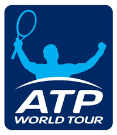

INTRODUCTION

The Association of Tennis Professionals (ATP) was formed in September 1972 by Donald Dell, Jack Kramer, and Cliff Drysdale to protect the interests of male professional tennis players. Drysdale became the first President. Since 1990, the association has organized the worldwide tennis tour for men and linked the title of the tour with the organization's name. In 1990 the organization was called the ATP Tour, which was renamed in 2001 as just ATP and the tour being called ATP Tour. In 2009 the name was changed again and is now known as the ATP World Tour.[1] It is an evolution of the tour competitions previously known as Grand Prix tennis tournaments and World Championship Tennis (WCT). The ATP's Executive Offices are in London, United Kingdom. ATP Americas is based in Ponte Vedra Beach, United States; ATP Europe is headquartered in Monaco; and ATP International, which covers Africa, Asia and Australasia, is based in Sydney, Australia.
The counterpart organization in the women's professional game is the Women's Tennis Association (WTA).
SOURCE:
BACK